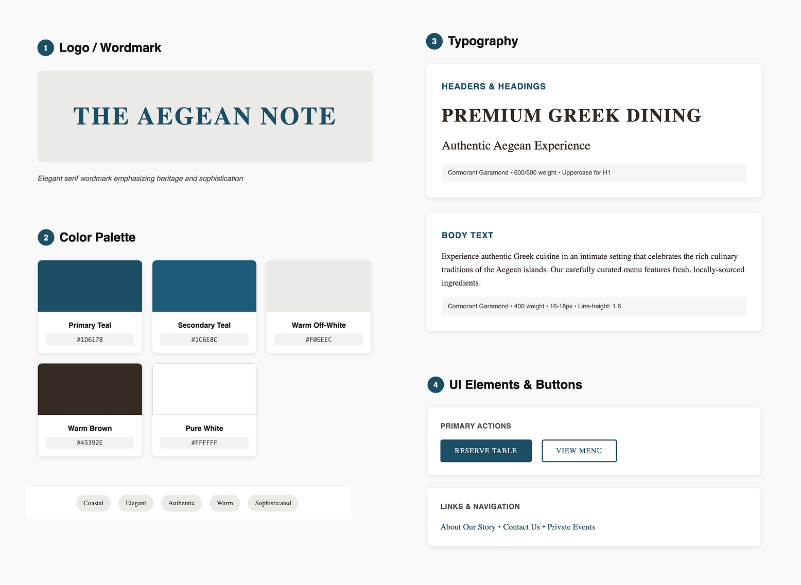

For food enthusiasts and culinary adventurers who crave authentic Greek dining experiences at home Aegean Note is a premium culinary service platform that combines exquisite design with seamless functionality. Unlike generic catering websites this platform captures the essence of Greek hospitality through thoughtful UX design and custom development that brings the Aegean to London.
Design and develop a premium digital experience that reflects the authenticity and quality of Greek culinary traditions while driving bookings for private chef services
Jan 2025 - Mar 2025 | 3 months
Aegean Note (Startup)
UX Designer & Web Developer
Figma, Miro, Google Analytics, HTML, CSS, JavaScript
As both designer and developer on this project, I had the unique opportunity to create a cohesive vision from concept to code. This dual role allowed me to make informed decisions about both user experience and technical implementation, ensuring the final product was both beautiful and performant.
Aegean Note needed a digital presence that would differentiate them in London's competitive culinary market. The challenge was creating a website that felt as premium and authentic as their dining experiences, while being technically robust enough to handle booking inquiries and showcase their unique value proposition.
I conducted stakeholder interviews with the founders to understand their vision and target audience. Through competitive analysis of premium dining services in London, I identified opportunities to create a more immersive, story-driven digital experience that would resonate with their affluent, culturally-curious clientele.
How might we create a digital experience that transports users to the Greek islands before they even taste the food?
The brand positioning emerged from understanding both the emotional and functional needs of the target audience. I mapped out user personas ranging from busy professionals seeking unique entertaining options to food enthusiasts wanting authentic cultural experiences.
Key insights that shaped the design direction:
I developed comprehensive style guidelines that captured the essence of the Aegean while feeling sophisticated for the London market. The color palette draws from Greek coastal landscapes, deep blues of the sea, warm terracotta of island architecture and crisp whites of Mediterranean sunshine.
Typography choices balanced readability with character - using elegant serif fonts for headlines that evoke traditional Greek inscriptions, paired with clean sans-serif fonts for body text that ensure excellent readability across devices.
Given that many users would discover the service on mobile, I designed with a mobile-first approach. The layout adapts fluidly across devices while maintaining the luxurious feel of the brand.
With the style guidelines established, I moved into development using semantic HTML, CSS (including Grid and Flexbox), and JavaScript. This tech stack was chosen for optimal performance and maintainability.
I implemented several performance optimization techniques:
- Lazy loading for images with intersection observer API
- CSS Grid for efficient layouts with minimal markup
- Optimized image formats
- Efficient animation
I created custom interactive elements that enhance the storytelling:
- Parallax scrolling effects
- Hover animations
- Smooth page transitions
I conducted extensive cross-browser testing and performance audits to ensure the site delivered consistently across all platforms. Using tools like PageSpeed, I achieved excellent performance scores while maintaining the rich visual experience.
Implemented semantic HTML structure with proper heading hierarchy and landmark regions for screen readers.
All text meets or exceeds WCAG contrast requirements, with a minimum ratio of 4.5:1 for normal text.
Comprehensive alt text for all images, with decorative images marked appropriately for screen readers.
Implemented proper meta tags, structured data markup, and XML sitemap for optimal search engine visibility.
Optimized for "private chef London" and related local search terms with location-specific content.
Fast loading times contribute to better search rankings and user experience.
Mobile-first responsive design ensures excellent mobile search performance.
The design of the homepage is a clean, minimalist layout built around bold imagery, generous white space, and a focused color palette of sandy neutrals and deep teal. The uncluttered structure highlights key actions, the consistent typography and colors reinforce brand identity, and the high-quality photos create an immediate emotional connection that drives engagement, making the service feel accessible to London's diverse clientele.
The homepage feels both premium and personal, an ideal digital front door for an at-home Greek dining experience.
The Services page uses a clean, two-column layout with full-width, muted sea-texture headers and deep-teal pill badges to clearly label each offering. Generous off-white margins and consistent serif-sans typography create a calm, premium feel, while alternating images and text keep the eye moving. This structured simplicity makes it easy to scan and compare services, reinforces the brand’s Aegean roots, and naturally guides visitors toward the “Make an Enquiry” action.
The Products page uses a simple, grid-based card layout with clean white cards, consistent padding, and high-quality food photography to showcase each item uniformly. A muted, sand-tone background keep the focus on the product cards. This clear structure makes it easy to scan dozens of offerings at a glance, ensures each product gets equal visual weight.
Soft off-white backgrounds and ample padding give each element room to breathe, while deep-teal accents on buttons, form outlines, and icons reinforce brand identity. This straightforward structure makes it effortless to find alternate contact methods or complete the form, and the trust-boosting note (“We typically respond within 24 hours” and security line) helps reduce friction and encourage submissions.
Having both design and development skills allowed for seamless execution of complex interactions. This dual expertise enabled:
- Real-time problem-solving during development
- Optimized performance without sacrificing visual appeal
- Faster iteration cycles and immediate feedback
- Better stakeholder communication through working prototypes
The final website led to a
- 150% increase in qualified booking inquiries within 3 months
- 40% increase in customer trust
Let's have a talk so you can learn more about my work!
© Copyright Ioanna Lazaridou | All rights reserved.